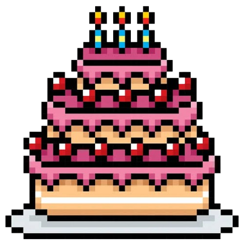

Daelaba Loreita Kesuma
happy birthday kakkk
haiii, Happy Birthday kakkk yahhh udah ga seumuran lagi yhh whwh (KITA BEDA 1 BULAN!!) semoga diusia mu yang sekarang, kamu bisa lebih pinter, lebih lancar rezekinya, lebih menghargai diri sendiri, lebih menghargai orang lain, lebih baik dari sebelumnya, sehat selalu, pokonya semua yang baik baik lakhh. and yhh makasi udah bertahan sejauh ini, kamu tetap hidup merupakan tekad kamu untuk berjuang jangan sering sering putus asa, pokonya pantang menyerah lakhhh. (jujur aku kehabisan kata kata wksks) ohh iya, makasi juga kamu udah nemenin aku sejauh ini hhe walaupun kita gada hubungan yang jelas, seneng rasanya bisa komunikasi atau berinteraksi sama kamu, dari yang awalnya kita bahkan ga kenal satu sama lain atau yaa bahkan kita gatau kalo kita itu ada, jadi saling kenal satu sama lain bahkan yaa sampe salah satu anggota keluarga kita tau. jujur, selama ini aku masih dibayang bayangin sama kamu yang dulu, kamu yang ilang mendadak, kamu yang selalu nolak ajakan atau apapun itulah, dan puncak terkahir waktu tiba tiba kaget buka sg mu wkwk. sebenernya gapapa si kalo kamu ternyata punya atau apapun itu sama cowo, yaa karna kita gada apa apa wkwk cuma ya kaget aja si, ga percaya aja bahkan setelah denger cerita dari umar aku tambah kaget wkwk. kadang kalo kamu ilang atau kita lagi ribut aku sempet mikir (wah kalo keulang lagi gimana ya?) (apakah bakal keulang nih). aku takut kalo aku sampe terbiasa gada kamu di aku, rasa ku ke kamu malah ilang. tapi gapapa, sekarang aku mulai tau kalo manusia atau apapun itu ga selalu jadi apa yang kita mau. tapi ini salahku juga si, kita ga selangkah lebih maju ahaha. kayanya ini waktu yang pas buat ngomong ini semua. entah bakal lanjut atau engga, aku harap akhir dari kita adalah tidak asing satu sama lain (akhir akhir emang pernah mulai? wkwkkw) (JUJUR GATAU MAU NGOMONG APA) intinya doa yang baik baik lah buat oye yang OMG 17. bisa buat KTP yhh, bagus deh keren (ak when yh). oh iya maaf ya kak cuma bisa ngasi itu hehhee, aku gada ide apapun alias gada duwit woooe😭😭. maaf buat yang dulu, makasi juga udah nemenin aku selama ini, dengerin cerita ku, sempetin nerima call ku, mabar bareng aku, ketemu aku ahahahha. seneng rasanya bisa kenal kamu, daelaba. MAAF KALO BERANTAKAN, CODING GABISA DIRAPIHIN SOALNYA😭😭